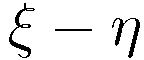

| Stress Measurement of Cantilever Beam under Dynamic Load by Holographic Particle-Tracking Velocimetry
|
|
Abstract
In this study, we observe the time-series of the stress field of a cantilever beam subjected to a dynamic load by using holographic Particle-Tracking Velocimetry (PTV). The beam (elastic modulus 2822 MPa, 3.9520.452.99 mm^3) is composed of a transparent acrylic resin containing dispersed tracer particles (average diameter: 60 um). The cantilever beam is subjected to a dynamic load (0 N to 10 N over 10 sec) at the tip. We compare the experimental and analytical values of the deflection at t = 10 sec. The RMS error is 24.5 um with respect to the maximum deflection value of 657 um.
Introduction
Computer Aided Engineering (CAE) analysis has an important role in concurrent engineering. However, the creation of an accurate Finite Element Method (FEM) model for practical products with a complex shape often requires a considerable amount of time and effort. The FEM model is complemented with Rapid Prototyping (RP) techniques. RP models are directly produced from three-dimensional Computer Aided Design (CAD) data by using a Numerical Control (NC) machine or a 3D printer.
Digital photoelastic stress analysis is one of the applications of the RP technique for CAE analysis. An RP model made of a transparent and birefringent material is used for this analysis. In three-dimensional photoelastic stress analysis, the RP model is initially stress frozen and mechanically sliced for evaluating the stress distribution. Therefore, the model cannot be repeatedly used and cannot be observed under dynamic load conditions.
We have previously proposed the measurement of the stress field of an RP model using digital holography. In that study, tracer particles were dispersed in an RP model made of acrylic material. Moreover, the proposed RP model was not sliced as in the case of three-dimensional photoelastic stress analysis, thereby enabling it to be repeatedly used and observed under dynamic load with respect to various conditions. The stress field was derived by substituting the displacement of tracer particles into equations of stress components. This displacement was measured using 3D Particle-Tracking Velocimetry (PTV) techniques used for fluid measurement. This previous study demonstrated that the three-dimensional stress field of a simply supported beam with a static load can be measured using holographic PTV.
The present study extends this previous work concerning a statically loaded model to observation of a dynamically loaded model. We observe a time series of the stress field of the cantilever beam under dynamic load by using holographic PTV. The deflection measurement is validated by comparing experimental and analytical data.
Cantilever beam as RP model under dynamic load
We observe the time-series of the stress field of a cantilever beam under dynamic load. The beam is made of acrylic transparent resin containing dispersed tracer particles (average diameter: 60 um)¡¡as shown in Fig. 1 (a). The cantilever beam (elastic modulus E = 2822 MPa, b = 2.99 mm, h = 3.95 mm, l = 20.45 mm as shown in Fig. 1 (b)) is subjected to a dynamic load (P = 0 N to 10 N in 10 sec) at the tip.
Fig. 1. Cantilever beam and tracer particles
Digital holography and detection of particle position
The small particles dispersed in a cantilever beam with dynamic load are used as a tracer which can track the movement of the beam. The three-dimensional positions of tracer particles are measured by digital holography at each time step. Figure 1 illustrates the positional relationship between the recording and reconstruction of the hologram pattern.
In the process of recording the hologram pattern of a tracer particle, the particle which is located on the  plane is illuminated by a plane wave from the left-hand side. The plane wave and object wave diffracted on the surface of the particle are recorded on the CCD element as the light intensity Id(x, y, 0) of the hologram pattern as shown in Fig. 2 (a). The CCD element is located on the x-y plane at a distance d from the particle.
Fig. 2. Recording and reconstruction of hologram pattern
In the process of reconstruction, the hologram pattern is numerically reconstructed using a personal computer as shown in Fig. 2(b). The light amplitude hz at the arbitrary position z in the z axis is represented by the following equations
Optical setup for recording hologram pattern of tracer particles
The hologram pattern of tracer particles dispersed in a cantilever beam is measured by in-line holography. A feature of in-line holography is the alignment of particles, in which the observed particles and optical system are aligned in the same straight line as shown in Fig. 3.
In order to magnify the observation area, a diameter of a plane wave emitted by a He-Ne laser ( = 632.8 nm) is reduced by relay lenses (2 in Fig. 3). The beam (4 in Fig. 3) is used to reduce the difference in refractive index between the surrounding air and the RP model.
As mentioned before, the three-dimensional position of tracer particles is measured by digital holography at each time step. Hologram patterns of tracer particles are recorded using a CCD camera (20482048 pixels, 8bit, 15 fps, XC-8500, SONY, 6 in Fig. 3).
Fig. 3. Optical setup for recording hologram pattern of tracer particles dispersed in RP model
Results
The three-dimensional deflection vectors and stress field are presented on the left-hand side of Fig. 4. Here, we consider the observation volume as 2069 grid points in the x, y, z directions, respectively. Central differences are used at the grid points. The deflection field and stress field in the x-y plane (z = 0) are shown on the right-hand side of Fig. 4.
Fig. 4. Time series of deflection and stress fields of cantilever beam under dynamic load
|
Related papers
- Measurement of three-dimensional stress field of RP model having a notch by using digital holography
Yohsuke Tanaka and Shigeru Murata
14th International Conference on Experimental Mechanics, 587, Poitiers, France, July 4-9, 2010.
- Three-dimensional Stress Analysis of a Simply Supported Beam using Digital Holography and Refractive Index Matching
Yohsuke Tanaka and Shigeru Murata
Journal of JSEM, Vol.10, pp.163-167, 2010.
- Stress Measurement of Cantilever Beam under Dynamic Load by Holographic Particle-Tracking Velocimetry
Yohsuke Tanaka and Shigeru Murata
Applied Mechanics and Materials, Vol.36, pp.317-322, 2010.
- Calibration of particle position on digital holography using transparent resin block with dispersed particles
Yohsuke Tanaka, Tatsuya Yoshino, Daisuke Harada and Shigeru Murata
Journal of Physics: Conference Series, Vol.147, 012088, 2009.
- Deflection measurement of a cantilever beam with dynamic load by using Holographic Particle-Tracking Velocimetry
Yohsuke Tanaka and Shigeru Murata
International Conference on Precision Instrumentation and Measurement, A047, Kiryu, Gunma, Japan, March 17-20, 2010.
- Development of Three-Dimensional Stress Analysis of Rapid Prototyping Model using Digital Holography and Index Matching
Yohsuke Tanaka and Shigeru Murata
4th International Symposium on Advanced Fluid/Solid Science and Technology in Experimental Mechanics, O-III-1, Niigata, Japan, November 28-30, 2009.
BACK
|
© Measurement System Laboratory, Kyoto Institute of Technology. 
| |